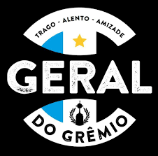
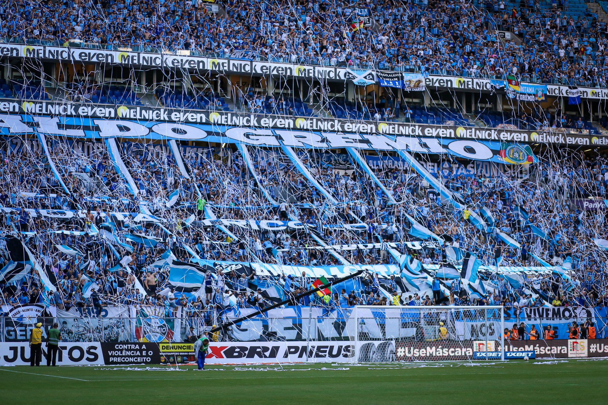

GERAL DO GRÊMIO 🔵⚫
A Geral do Grêmio é uma barra brava brasileira do Grêmio Foot-Ball Porto Alegrense. Criada em 2001, foi a primeira barra brava do Brasil e é considerada a maior torcida do clube, além de ser uma das torcidas mais fanáticas do país. Presente nos jogos do tricolor, a Geral do Grêmio faz ecoar seus cantos pelo estádio, celebrando a paixão e o apoio incondicional ao time.
MÚSICAS DA GERAL 🔵⚫
1️⃣- Venho do Bairro da Azenha2️⃣- Pelo Grêmio Decidi Viver
3️⃣- Borracho Sim Senhor / Queremos a Copa
4️⃣- Renato Outra Vez Nos Fez Campeão
5️⃣- Nós Somos Do Grêmio
